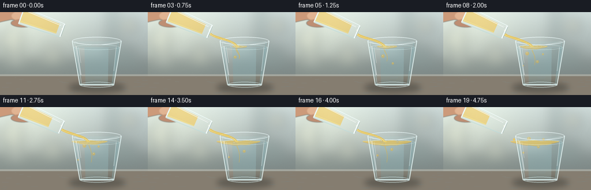
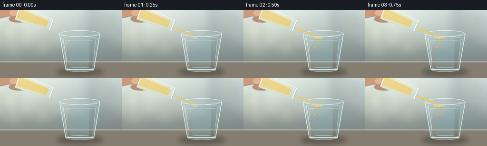

CODING AGENTS AS PIXEL WORLD MODELS
traex/GPT-5.6-Sol · material_0023
点击播放 · 原生 RGB 像素
逐轮保存的候选
回放视频、检查图与代码变化。
每份候选均可单独播放。实际图片检查记录在下方工具轨迹中。
候选 01播放与检查图
点击播放 · 原生 RGB 像素


展开代码变化
--- 上一保存版本
+++ 本次保存版本
@@ -0,0 +1,239 @@
+from pathlib import Path
+import math
+import numpy as np
+from PIL import Image, ImageDraw, ImageFilter
+import artifact_io
+
+# Procedural, antialiased still-life animation. No input imagery is used.
+W,H,N,S = 256,144,20,4
+SS=4
+rng=np.random.default_rng(23)
+
+def sc(v): return int(round(v*SS))
+def pts(seq): return [(sc(x),sc(y)) for x,y in seq]
+def ellipse(draw, box, **kw): draw.ellipse(tuple(sc(v) for v in box), **kw)
+def line(draw, xy, **kw):
+ if 'width' in kw: kw['width']=max(1,sc(kw['width']))
+ draw.line(pts(xy), **kw)
+def poly(draw, xy, **kw): draw.polygon(pts(xy), **kw)
+
+def bezier(p0,p1,p2,p3,n=40):
+ t=np.linspace(0,1,n)[:,None]
+ q=(1-t)**3*np.array(p0)+3*(1-t)**2*t*np.array(p1)+3*(1-t)*t*t*np.array(p2)+t**3*np.array(p3)
+ return q
+
+def ribbon(curve, widths):
+ d=np.gradient(curve,axis=0); norms=np.sqrt((d*d).sum(1))+1e-6
+ normal=np.c_[-d[:,1]/norms,d[:,0]/norms]
+ a=curve+normal*np.asarray(widths)[:,None]/2
+ b=curve-normal*np.asarray(widths)[:,None]/2
+ return np.vstack([a,b[::-1]])
+
+def background():
+ yy,xx=np.mgrid[0:H*SS,0:W*SS]
+ # soft cream-to-slate kitchen background
+ t=yy/(H*SS)
+ top=np.array([205,218,216.]); bot=np.array([117,127,125.])
+ arr=top[None,None,:]*(1-t[:,:,None])+bot[None,None,:]*t[:,:,None]
+ # broad window glow left and dark counter edge
+ glow=np.exp(-((xx-sc(40))**2/(2*sc(75)**2)+(yy-sc(35))**2/(2*sc(48)**2)))[:,:,None]
+ arr += glow*np.array([35,32,22])[None,None,:]
+ # subtle photographic grain
+ arr += rng.normal(0,1.3,arr.shape[:2])[:,:,None]
+ arr=np.clip(arr,0,255).astype('uint8')
+ im=Image.fromarray(arr,'RGB').convert('RGBA')
+ # blurred kitchen shapes and bokeh
+ b=Image.new('RGBA',im.size,(0,0,0,0)); d=ImageDraw.Draw(b)
+ d.rectangle((0,sc(84),sc(256),sc(111)), fill=(67,81,79,50))
+ d.rectangle((sc(184),0,sc(207),sc(99)), fill=(42,68,70,34))
+ d.rectangle((sc(18),sc(11),sc(35),sc(91)), fill=(250,248,224,34))
+ for cx,cy,r,col in [(225,23,13,(248,219,155,46)),(21,49,18,(255,252,210,40)),(218,77,22,(35,67,66,35)),(91,72,15,(246,235,189,29))]:
+ d.ellipse((sc(cx-r),sc(cy-r),sc(cx+r),sc(cy+r)),fill=col)
+ b=b.filter(ImageFilter.GaussianBlur(sc(10)))
+ im=Image.alpha_composite(im,b)
+ # countertop
+ c=Image.new('RGBA',im.size,(0,0,0,0)); d=ImageDraw.Draw(c)
+ d.rectangle((0,sc(108),sc(256),sc(144)), fill=(133,125,112,255))
+ d.rectangle((0,sc(108),sc(256),sc(111)), fill=(210,203,188,110))
+ # stone texture
+ for _ in range(55):
+ x=float(rng.uniform(0,256)); y=float(rng.uniform(112,144)); l=float(rng.uniform(2,15))
+ d.line((sc(x),sc(y),sc(x+l),sc(y+rng.uniform(-.5,.5))),fill=(72,70,66,int(rng.uniform(5,14))),width=1)
+ return Image.alpha_composite(im,c)
+
+BG=background()
+
+def shadow_layer():
+ la=Image.new('RGBA',(W*SS,H*SS),(0,0,0,0)); d=ImageDraw.Draw(la)
+ ellipse(d,(119,122,217,140),fill=(17,24,23,90))
+ ellipse(d,(134,126,207,136),fill=(9,17,17,75))
+ return la.filter(ImageFilter.GaussianBlur(sc(5)))
+SHADOW=shadow_layer()
+
+def source_glass(frame):
+ # A small clear tumbler held at a gentle pouring angle.
+ lay=Image.new('RGBA',(W*SS,H*SS),(0,0,0,0)); d=ImageDraw.Draw(lay)
+ f=frame/(N-1)
+ pour=0 if frame==0 else min(1,(frame)/4)
+ ang=math.radians(20+4*pour)
+ u=np.array([math.cos(ang),math.sin(ang)])
+ v=np.array([-math.sin(ang),math.cos(ang)])
+ c=np.array([72.0-1.2*f,18.5+1.2*f])
+ rear=c-u*37; mouth=c+u*38
+ # cropped hand behind the glass, softly modeled
+ hand=Image.new('RGBA',lay.size,(0,0,0,0)); hd=ImageDraw.Draw(hand)
+ poly(hd,[(-12,-3),(39,-7),(57,5),(51,16),(19,13),(-8,19)],fill=(202,147,113,235))
+ ellipse(hd,(20,-3,63,16),fill=(225,174,138,230))
+ ellipse(hd,(19,12,60,26),fill=(185,126,96,215))
+ hand=hand.filter(ImageFilter.GaussianBlur(sc(.7)))
+ lay=Image.alpha_composite(lay,hand); d=ImageDraw.Draw(lay)
+ # glass outer body polygon
+ corners=[rear-v*15,rear+v*15,mouth+v*12,mouth-v*12]
+ poly(d,corners,fill=(224,242,239,30))
+ # oil remaining in lower half; boundary retreats toward rear over time
+ end=mouth-u*(8+23*max(0,(frame-1)/18))
+ oc=[rear+v*12,rear-v*12,end-v*9,end+v*9]
+ poly(d,oc,fill=(245,195,67,135))
+ # warm lower rim of oil
+ line(d,[rear+v*10,end+v*8],fill=(255,226,102,150),width=1)
+ # glass base and side edges
+ line(d,[rear-v*15,rear+v*15],fill=(239,252,250,190),width=2)
+ line(d,[rear-v*15,mouth-v*12],fill=(244,255,255,170),width=1.2)
+ line(d,[rear+v*15,mouth+v*12],fill=(188,220,220,160),width=1.4)
+ line(d,[rear-v*11,mouth-v*9],fill=(255,255,255,105),width=.7)
+ # mouth is a narrow ellipse approximated with multiple parallel arcs/lines
+ line(d,[mouth-v*12,mouth+v*12],fill=(247,255,255,225),width=2.0)
+ line(d,[mouth-v*10+u*1.5,mouth+v*10+u*1.5],fill=(118,152,150,135),width=.8)
+ # specular streak
+ line(d,[rear-v*10+u*3,mouth-v*7-u*5],fill=(255,255,255,175),width=1.1)
+ return lay,mouth,v
+
+def draw_main_glass(base,frame):
+ f=frame/(N-1)
+ # Interior clip shape, faint water tint
+ water=Image.new('RGBA',base.size,(0,0,0,0)); d=ImageDraw.Draw(water)
+ interior=[(127,51),(207,51),(196,126),(139,126)]
+ poly(d,interior,fill=(172,220,224,30))
+ # Water body begins at y=61, with moving surface ripple.
+ ysurf=61.0
+ waterpoly=[(128,ysurf),(207,ysurf),(196,126),(139,126)]
+ poly(d,waterpoly,fill=(154,211,220,62))
+ # subtle vertical refraction bands
+ poly(d,[(137,62),(146,62),(148,125),(142,125)],fill=(236,252,250,28))
+ poly(d,[(188,62),(201,62),(193,126),(187,126)],fill=(80,151,162,18))
+ base=Image.alpha_composite(base,water)
+
+ # Oil floating and turbulent blobs are behind front glass.
+ oils=Image.new('RGBA',base.size,(0,0,0,0)); od=ImageDraw.Draw(oils)
+ amount=max(0,min(1,(frame-1)/15))
+ if amount>0:
+ center=157+2*math.sin(frame*.45)
+ spread=8+34*amount
+ thick=1.5+5.2*amount
+ # translucent lens at interface, wavy boundary
+ x0=center-spread; x1=center+spread
+ top=[]; bottom=[]
+ for x in np.linspace(x0,x1,45):
+ edge=max(0,1-((x-center)/spread)**2)
+ top.append((x,59.0-.8*edge+0.55*math.sin(x*.22+frame*.75)*edge))
+ bottom.append((x,60.4+thick*edge+.45*math.sin(x*.31-frame*.55)*edge))
+ poly(od,top+bottom[::-1],fill=(247,193,55,int(95+45*amount)))
+ line(od,top,fill=(255,235,140,150),width=.8)
+ line(od,bottom,fill=(190,132,25,70),width=.7)
+ # stream-driven descending golden tendril
+ if frame<17:
+ depth=14+21*min(1,frame/10)
+ cur=bezier((154,61),(151,68),(162,73),(158,61+depth),30)
+ wid=np.linspace(3.7,1.1,30)*(0.5+0.5*math.sin(math.pi*min(1,frame/4)))
+ poly(od,ribbon(cur,wid),fill=(241,179,41,100))
+ # immiscible oil globules underwater, moving upward/spreading
+ blobs=[(-9,17,3.1),(8,28,2.5),(17,12,2.0),(-18,32,1.7)]
+ for j,(ox,dep,r) in enumerate(blobs):
+ born=2+j*2
+ if frame>=born:
+ age=frame-born
+ yy=61+dep-max(0,age-2)*1.55
+ xx=center+ox+2*math.sin(age*.7+j)
+ rr=r*(.7+min(1,age/4)*.3)
+ ellipse(od,(xx-rr,yy-rr,xx+rr,yy+rr),fill=(241,184,48,110))
+ ellipse(od,(xx-rr*.35,yy-rr*.65,xx+rr*.05,yy-rr*.2),fill=(255,242,169,120))
+ base=Image.alpha_composite(base,oils)
+
+ # Surface ripple/highlights and glass shell.
+ gl=Image.new('RGBA',base.size,(0,0,0,0)); gd=ImageDraw.Draw(gl)
+ # rear rim
+ ellipse(gd,(125,43,210,57),fill=(225,246,246,18),outline=(213,239,239,160),width=sc(1))
+ # water surface ellipse and ripples
+ ellipse(gd,(128,56.5,207,65.5),outline=(224,251,250,120),width=sc(.8))
+ impactx=154
+ for j in range(3):
+ phase=max(0,frame-j*2)
+ if phase>0:
+ rw=min(31,4+phase*2.5-j*2)
+ alpha=max(0,105-phase*7)
+ if alpha:
+ ellipse(gd,(impactx-rw,59-rw*.10,impactx+rw,59+rw*.10+1.3),outline=(245,255,249,alpha),width=sc(.55))
+ # tapered glass contours
+ line(gd,[(125,50),(138,126)],fill=(233,250,249,205),width=1.5)
+ line(gd,[(210,50),(197,126)],fill=(229,248,247,210),width=1.5)
+ line(gd,[(129,53),(141,123)],fill=(255,255,255,100),width=.7)
+ line(gd,[(205,53),(194,123)],fill=(99,153,158,80),width=.8)
+ # bright vertical reflections
+ line(gd,[(132,59),(140,109)],fill=(255,255,255,135),width=1.5)
+ line(gd,[(136,61),(140,88)],fill=(255,255,255,100),width=.7)
+ line(gd,[(201,61),(197,102)],fill=(246,255,255,100),width=1.0)
+ # heavy base and bottom refractive ellipse
+ line(gd,[(138,126),(197,126)],fill=(225,246,245,220),width=2.2)
+ ellipse(gd,(138,121,198,131),outline=(219,242,241,170),width=sc(1.1))
+ line(gd,[(145,128),(191,128)],fill=(255,255,255,115),width=.7)
+ # foreground rim, crisp
+ # lower arc represented by ellipse mask with top half softened by overlay
+ ellipse(gd,(125,43,210,57),outline=(242,255,255,200),width=sc(1.05))
+ # erase-ish rear lower clutter with a highlight arc along front
+ line(gd,[(129,51),(136,54),(151,56),(168,57),(187,55),(205,51)],fill=(250,255,255,145),width=.75)
+ return Image.alpha_composite(base,gl)
+
+def pour_stream(base, frame, mouth):
+ # Starts after first frame, narrows near the end; continuous, viscous and golden-clear.
+ if frame==0: return base
+ if frame<=15: strength=min(1,frame/4)
+ else: strength=max(0,(19-frame)/4)
+ if strength<=0 and frame<19: return base
+ st=Image.new('RGBA',base.size,(0,0,0,0)); sd=ImageDraw.Draw(st)
+ start=np.array(mouth)+np.array([1.0,4.0])
+ end=np.array([154.0+1.3*math.sin(frame*.45),59.5])
+ curve=bezier(start,start+np.array([8,7]),end+np.array([-8,-11]),end,45)
+ wob=.45*np.sin(np.linspace(0,3*math.pi,45)+frame*.55)
+ curve[:,0]+=wob
+ width=(2.4+1.7*strength)*(1-.14*np.linspace(0,1,45))+0.22*np.sin(np.linspace(0,4*math.pi,45)+frame)
+ if frame==19:
+ # final falling droplet, physically separated
+ yy=49+((frame*7)%9)
+ ellipse(sd,(121,yy-2,124,yy+2.3),fill=(248,201,74,205))
+ else:
+ poly(sd,ribbon(curve,width),fill=(246,196,56,190))
+ # transparent core and sharp lit edge
+ hi=curve.copy(); hi[:,0]-=width*.18
+ line(sd,hi,fill=(255,239,154,195),width=.65)
+ low=curve.copy(); low[:,0]+=width*.27
+ line(sd,low,fill=(176,126,24,80),width=.45)
+ ellipse(sd,(end[0]-3,end[1]-1.2,end[0]+3,end[1]+1.5),fill=(255,222,105,110))
+ return Image.alpha_composite(base,st)
+
+def render(i):
+ im=BG.copy(); im=Image.alpha_composite(im,SHADOW)
+ src,mouth,v=source_glass(i)
+ im=Image.alpha_composite(im,src)
+ # destination glass body should occlude oil below surface; pour passes in front of rear rim.
+ im=draw_main_glass(im,i)
+ im=pour_stream(im,i,mouth)
+ # Tiny airborne glint at spout
+ gl=Image.new('RGBA',im.size,(0,0,0,0)); d=ImageDraw.Draw(gl)
+ ellipse(d,(mouth[0]-1,mouth[1]-4,mouth[0]+1,mouth[1]-1),fill=(255,255,240,150))
+ im=Image.alpha_composite(im,gl)
+ return np.array(im.convert('RGB').resize((W,H),Image.Resampling.LANCZOS),dtype=np.uint8)
+
+frames=np.stack([render(i) for i in range(N)])
+assert frames.shape==(20,144,256,3) and frames.dtype==np.uint8
+artifact_io.save(frames,Path(__file__).resolve().parent)
+print('saved',frames.shape,frames.dtype,'motion mean',float(np.abs(np.diff(frames.astype(np.int16),axis=0)).mean()))
可观测工具轨迹
实际执行的命令与返回图片。
命令 1exit 0
/bin/bash -lc "cat prompt.txt && printf '\\n---RULES---\\n' && cat GENERATION_RULES.md && printf '\\n---SPEC---\\n' && cat task_spec.json"
命令 2exit 0
/bin/bash -lc "find . -maxdepth 2 -type f -printf '%p %s bytes\\n' | sort"
命令 3exit 0
/bin/bash -lc "which ffmpeg || true; which blender || true; python3 - <<'PY' for m in ['cv2','numpy','PIL','scipy','skimage','moviepy']: try: x=__import__(m); print(m,'OK',getattr(x,'__version__','')) except Exception as e: print(m,'NO',e) PY"
命令 4exit 0
/bin/bash -lc 'cat artifact_io.py'
命令 5exit 0
/bin/bash -lc "cat > generate.py <<'PY'
from pathlib import Path
import math
import numpy as np
from PIL import Image, ImageDraw, ImageFilter
import artifact_io
# Procedural, antialiased still-life animation. No input imagery is used.
W,H,N,S = 256,144,20,4
SS=4
rng=np.random.default_rng(23)
def sc(v): return int(round(v*SS))
def pts(seq): return [(sc(x),sc(y)) for x,y in seq]
def ellipse(draw, box, **kw): draw.ellipse(tuple(sc(v) for v in box), **kw)
def line(draw, xy, **kw):
if 'width' in kw: kw['width']=max(1,sc(kw['width']))
draw.line(pts(xy), **kw)
def poly(draw, xy, **kw): draw.polygon(pts(xy), **kw)
def bezier(p0,p1,p2,p3,n=40):
t=np.linspace(0,1,n)[:,None]
q=(1-t)**3*np.array(p0)+3*(1-t)**2*t*np.array(p1)+3*(1-t)*t*t*np.array(p2)+t**3*np.array(p3)
return q
def ribbon(curve, widths):
d=np.gradient(curve,axis=0); norms=np.sqrt((d*d).sum(1))+1e-6
normal=np.c_[-d[:,1]/norms,d[:,0]/norms]
a=curve+normal*np.asarray(widths)[:,None]/2
b=curve-normal*np.asarray(widths)[:,None]/2
return np.vstack([a,b[::-1]])
def background():
yy,xx=np.mgrid[0:H*SS,0:W*SS]
# soft cream-to-slate kitchen background
t=yy/(H*SS)
top=np.array([205,218,216.]); bot=np.array([117,127,125.])
arr=top[None,None,:]*(1-t[:,:,None])+bot[None,None,:]*t[:,:,None]
# broad window glow left and dark counter edge
glow=np.exp(-((xx-sc(40))**2/(2*sc(75)**2)+(yy-sc(35))**2/(2*sc(48)**2)))[:,:,None]
arr += glow*np.array([35,32,22])[None,None,:]
# subtle photographic grain
arr += rng.normal(0,1.3,arr.shape[:2])[:,:,None]
arr=np.clip(arr,0,255).astype('uint8')
im=Image.fromarray(arr,'RGB').convert('RGBA')
# blurred kitchen shapes and bokeh
b=Image.new('RGBA',im.size,(0,0,0,0)); d=ImageDraw.Draw(b)
d.rectangle((0,sc(84),sc(256),sc(111)), fill=(67,81,79,50))
d.rectangle((sc(184),0,sc(207),sc(99)), fill=(42,68,70,34))
d.rectangle((sc(18),sc(11),sc(35),sc(91)), fill=(250,248,224,34))
for cx,cy,r,col in [(225,23,13,(248,219,155,46)),(21,49,18,(255,252,210,40)),(218,77,22,(35,67,66,35)),(91,72,15,(246,235,189,29))]:
d.ellipse((sc(cx-r),sc(cy-r),sc(cx+r),sc(cy+r)),fill=col)
b=b.filter(ImageFilter.GaussianBlur(sc(10)))
im=Image.alpha_composite(im,b)
# countertop
c=Image.new('RGBA',im.size,(0,0,0,0)); d=ImageDraw.Draw(c)
d.rectangle((0,sc(108),sc(256),sc(144)), fill=(133,125,112,255))
d.rectangle((0,sc(108),sc(256),sc(111)), fill=(210,203,188,110))
# stone texture
for _ in range(55):
x=float(rng.uniform(0,256)); y=float(rng.uniform(112,144)); l=float(rng.uniform(2,15))
d.line((sc(x),sc(y),sc(x+l),sc(y+rng.uniform(-.5,.5))),fill=(72,70,66,int(rng.uniform(5,14))),width=1)
return Image.alpha_composite(im,c)
BG=background()
def shadow_layer():
la=Image.new('RGBA',(W*SS,H*SS),(0,0,0,0)); d=ImageDraw.Draw(la)
ellipse(d,(119,122,217,140),fill=(17,24,23,90))
ellipse(d,(134,126,207,136),fill=(9,17,17,75))
return la.filter(ImageFilter.GaussianBlur(sc(5)))
SHADOW=shadow_layer()
def source_glass(frame):
# A small clear tumbler held at a gentle pouring angle.
lay=Image.new('RGBA',(W*SS,H*SS),(0,0,0,0)); d=ImageDraw.Draw(lay)
f=frame/(N-1)
pour=0 if frame==0 else min(1,(frame)/4)
ang=math.radians(20+4*pour)
u=np.array([math.cos(ang),math.sin(ang)])
v=np.array([-math.sin(ang),math.cos(ang)])
c=np.array([72.0-1.2*f,18.5+1.2*f])
rear=c-u*37; mouth=c+u*38
# cropped hand behind the glass, softly modeled
hand=Image.new('RGBA',lay.size,(0,0,0,0)); hd=ImageDraw.Draw(hand)
poly(hd,[(-12,-3),(39,-7),(57,5),(51,16),(19,13),(-8,19)],fill=(202,147,113,235))
ellipse(hd,(20,-3,63,16),fill=(225,174,138,230))
ellipse(hd,(19,12,60,26),fill=(185,126,96,215))
hand=hand.filter(ImageFilter.GaussianBlur(sc(.7)))
lay=Image.alpha_composite(lay,hand); d=ImageDraw.Draw(lay)
# glass outer body polygon
corners=[rear-v*15,rear+v*15,mouth+v*12,mouth-v*12]
poly(d,corners,fill=(224,242,239,30))
# oil remaining in lower half; boundary retreats toward rear over time
end=mouth-u*(8+23*max(0,(frame-1)/18))
oc=[rear+v*12,rear-v*12,end-v*9,end+v*9]
poly(d,oc,fill=(245,195,67,135))
# warm lower rim of oil
line(d,[rear+v*10,end+v*8],fill=(255,226,102,150),width=1)
# glass base and side edges
line(d,[rear-v*15,rear+v*15],fill=(239,252,250,190),width=2)
line(d,[rear-v*15,mouth-v*12],fill=(244,255,255,170),width=1.2)
line(d,[rear+v*15,mouth+v*12],fill=(188,220,220,160),width=1.4)
line(d,[rear-v*11,mouth-v*9],fill=(255,255,255,105),width=.7)
# mouth is a narrow ellipse approximated with multiple parallel arcs/lines
line(d,[mouth-v*12,mouth+v*12],fill=(247,255,255,225),width=2.0)
line(d,[mouth-v*10+u*1.5,mouth+v*10+u*1.5],fill=(118,152,150,135),width=.8)
# specular streak
line(d,[rear-v*10+u*3,mouth-v*7-u*5],fill=(255,255,255,175),width=1.1)
return lay,mouth,v
def draw_main_glass(base,frame):
f=frame/(N-1)
# Interior clip shape, faint water tint
water=Image.new('RGBA',base.size,(0,0,0,0)); d=ImageDraw.Draw(water)
interior=[(127,51),(207,51),(196,126),(139,126)]
poly(d,interior,fill=(172,220,224,30))
# Water body begins at y=61, with moving surface ripple.
ysurf=61.0
waterpoly=[(128,ysurf),(207,ysurf),(196,126),(139,126)]
poly(d,waterpoly,fill=(154,211,220,62))
# subtle vertical refraction bands
poly(d,[(137,62),(146,62),(148,125),(142,125)],fill=(236,252,250,28))
poly(d,[(188,62),(201,62),(193,126),(187,126)],fill=(80,151,162,18))
base=Image.alpha_composite(base,water)
# Oil floating and turbulent blobs are behind front glass.
oils=Image.new('RGBA',base.size,(0,0,0,0)); od=ImageDraw.Draw(oils)
amount=max(0,min(1,(frame-1)/15))
if amount>0:
center=157+2*math.sin(frame*.45)
spread=8+34*amount
thick=1.5+5.2*amount
# translucent lens at interface, wavy boundary
x0=center-spread; x1=center+spread
top=[]; bottom=[]
for x in np.linspace(x0,x1,45):
edge=max(0,1-((x-center)/spread)**2)
top.append((x,59.0-.8*edge+0.55*math.sin(x*.22+frame*.75)*edge))
bottom.append((x,60.4+thick*edge+.45*math.sin(x*.31-frame*.55)*edge))
poly(od,top+bottom[::-1],fill=(247,193,55,int(95+45*amount)))
line(od,top,fill=(255,235,140,150),width=.8)
line(od,bottom,fill=(190,132,25,70),width=.7)
# stream-driven descending golden tendril
if frame<17:
depth=14+21*min(1,frame/10)
cur=bezier((154,61),(151,68),(162,73),(158,61+depth),30)
wid=np.linspace(3.7,1.1,30)*(0.5+0.5*math.sin(math.pi*min(1,frame/4)))
poly(od,ribbon(cur,wid),fill=(241,179,41,100))
# immiscible oil globules underwater, moving upward/spreading
blobs=[(-9,17,3.1),(8,28,2.5),(17,12,2.0),(-18,32,1.7)]
for j,(ox,dep,r) in enumerate(blobs):
born=2+j*2
if frame>=born:
age=frame-born
yy=61+dep-max(0,age-2)*1.55
xx=center+ox+2*math.sin(age*.7+j)
rr=r*(.7+min(1,age/4)*.3)
ellipse(od,(xx-rr,yy-rr,xx+rr,yy+rr),fill=(241,184,48,110))
ellipse(od,(xx-rr*.35,yy-rr*.65,xx+rr*.05,yy-rr*.2),fill=(255,242,169,120))
base=Image.alpha_composite(base,oils)
# Surface ripple/highlights and glass shell.
gl=Image.new('RGBA',base.size,(0,0,0,0)); gd=ImageDraw.Draw(gl)
# rear rim
ellipse(gd,(125,43,210,57),fill=(225,246,246,18),outline=(213,239,239,160),width=sc(1))
# water surface ellipse and ripples
ellipse(gd,(128,56.5,207,65.5),outline=(224,251,250,120),width=sc(.8))
impactx=154
for j in range(3):
phase=max(0,frame-j*2)
if phase>0:
rw=min(31,4+phase*2.5-j*2)
alpha=max(0,105-phase*7)
if alpha:
ellipse(gd,(impactx-rw,59-rw*.10,impactx+rw,59+rw*.10+1.3),outline=(245,255,249,alpha),width=sc(.55))
# tapered glass contours
line(gd,[(125,50),(138,126)],fill=(233,250,249,205),width=1.5)
line(gd,[(210,50),(197,126)],fill=(229,248,247,210),width=1.5)
line(gd,[(129,53),(141,123)],fill=(255,255,255,100),width=.7)
line(gd,[(205,53),(194,123)],fill=(99,153,158,80),width=.8)
# bright vertical reflections
line(gd,[(132,59),(140,109)],fill=(255,255,255,135),width=1.5)
line(gd,[(136,61),(140,88)],fill=(255,255,255,100),width=.7)
line(gd,[(201,61),(197,102)],fill=(246,255,255,100),width=1.0)
# heavy base and bottom refractive ellipse
line(gd,[(138,126),(197,126)],fill=(225,246,245,220),width=2.2)
ellipse(gd,(138,121,198,131),outline=(219,242,241,170),width=sc(1.1))
line(gd,[(145,128),(191,128)],fill=(255,255,255,115),width=.7)
# foreground rim, crisp
# lower arc represented by ellipse mask with top half softened by overlay
ellipse(gd,(125,43,210,57),outline=(242,255,255,200),width=sc(1.05))
# erase-ish rear lower clutter with a highlight arc along front
line(gd,[(129,51),(136,54),(151,56),(168,57),(187,55),(205,51)],fill=(250,255,255,145),width=.75)
return Image.alpha_composite(base,gl)
def pour_stream(base, frame, mouth):
# Starts after first frame, narrows near the end; continuous, viscous and golden-clear.
if frame==0: return base
if frame<=15: strength=min(1,frame/4)
else: strength=max(0,(19-frame)/4)
if strength<=0 and frame<19: return base
st=Image.new('RGBA',base.size,(0,0,0,0)); sd=ImageDraw.Draw(st)
start=np.array(mouth)+np.array([1.0,4.0])
end=np.array([154.0+1.3*math.sin(frame*.45),59.5])
curve=bezier(start,start+np.array([8,7]),end+np.array([-8,-11]),end,45)
wob=.45*np.sin(np.linspace(0,3*math.pi,45)+frame*.55)
curve[:,0]+=wob
width=(2.4+1.7*strength)*(1-.14*np.linspace(0,1,45))+0.22*np.sin(np.linspace(0,4*math.pi,45)+frame)
if frame==19:
# final falling droplet, physically separated
yy=49+((frame*7)%9)
ellipse(sd,(121,yy-2,124,yy+2.3),fill=(248,201,74,205))
else:
poly(sd,ribbon(curve,width),fill=(246,196,56,190))
# transparent core and sharp lit edge
hi=curve.copy(); hi[:,0]-=width*.18
line(sd,hi,fill=(255,239,154,195),width=.65)
low=curve.copy(); low[:,0]+=width*.27
line(sd,low,fill=(176,126,24,80),width=.45)
ellipse(sd,(end[0]-3,end[1]-1.2,end[0]+3,end[1]+1.5),fill=(255,222,105,110))
return Image.alpha_composite(base,st)
def render(i):
im=BG.copy(); im=Image.alpha_composite(im,SHADOW)
src,mouth,v=source_glass(i)
im=Image.alpha_composite(im,src)
# destination glass body should occlude oil below surface; pour passes in front of rear rim.
im=draw_main_glass(im,i)
im=pour_stream(im,i,mouth)
# Tiny airborne glint at spout
gl=Image.new('RGBA',im.size,(0,0,0,0)); d=ImageDraw.Draw(gl)
ellipse(d,(mouth[0]-1,mouth[1]-4,mouth[0]+1,mouth[1]-1),fill=(255,255,240,150))
im=Image.alpha_composite(im,gl)
return np.array(im.convert('RGB').resize((W,H),Image.Resampling.LANCZOS),dtype=np.uint8)
frames=np.stack([render(i) for i in range(N)])
assert frames.shape==(20,144,256,3) and frames.dtype==np.uint8
artifact_io.save(frames,Path(__file__).resolve().parent)
print('saved',frames.shape,frames.dtype,'motion mean',float(np.abs(np.diff(frames.astype(np.int16),axis=0)).mean()))
PY
python3 generate.py"命令 6exit 0
/bin/bash -lc "find frames -maxdepth 1 -type f -name '*.png' | sort | wc -l && du -h pixels.npz index.html inspection.png frames | sort -h && git status --short 2>/dev/null || true"
命令 7exit 0
/bin/bash -lc "python3 - <<'PY'
from pathlib import Path
import numpy as np
from PIL import Image
p=Path('.')
a=np.stack([np.array(Image.open(p/'frames'/f'{i:02d}.png')) for i in range(20)])
print('shape/dtype/range',a.shape,a.dtype,(a.min(),a.max()))
print('RGB?',all(Image.open(p/'frames'/f'{i:02d}.png').mode=='RGB' for i in range(20)))
d=np.abs(np.diff(a.astype(np.int16),axis=0))
print('frame MAD',np.round(d.mean((1,2,3)),3).tolist())
print('changed pixels',[(d[i].max(2)>2).sum().item() for i in range(19)])
print('npz',np.load('pixels.npz')['pixels'].shape,np.load('pixels.npz')['pixels'].dtype)
for f in ['index.html','inspection.png','transition_check.png','pixels.npz','generate.py']:
q=p/f; print(f,q.exists(),q.stat().st_size if q.exists() else 0)
PY"保存候选 1 份；完成命令 7 次；可验证图片返回 0 张。原始 API 响应与完整日志保留在本地。